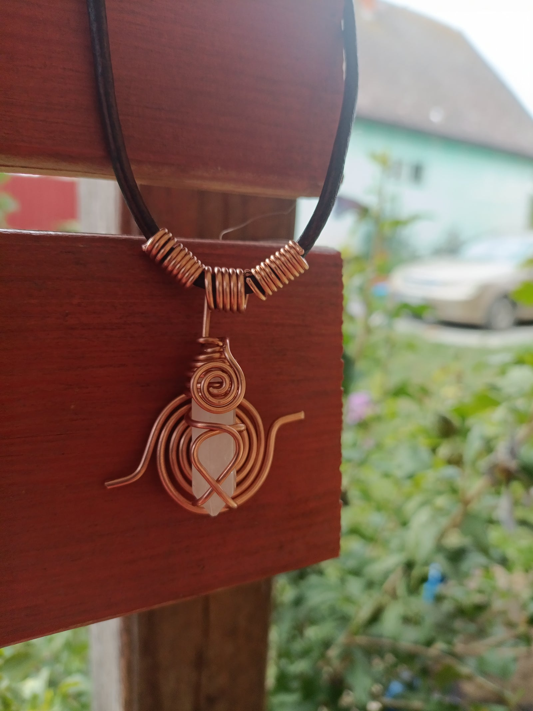

Nyakláncok
Szakrális energiakódok a mellkason viselve, melyek összekötik a szíved a kozmosz rezgésével.

Veyara
A Végtelen Fény Őrzője
Veyara az ősi Atlantisz fényének emléke, a Végtelen Fény Őrzője, aki most rézspirálban és hegyikristályban tér vissza. A Sacred Cubit triskelion szakrális geometriája a test, lélek és szellem egységét hordozza, míg a yin–yang középpont az ellentétek harmóniáját teremti meg. A spirál az élet energiáját vezeti felfelé, a hegyikristály pedig tisztít és felerősíti a rezgéseket, mint egy fényantenna. Veyara nem csupán ékszer – hanem egy élő energiakód, amely emlékeztet arra, hogy a fény benned ébred, ha képes vagy meglátni magadban a végtelent.
9 900 Ft